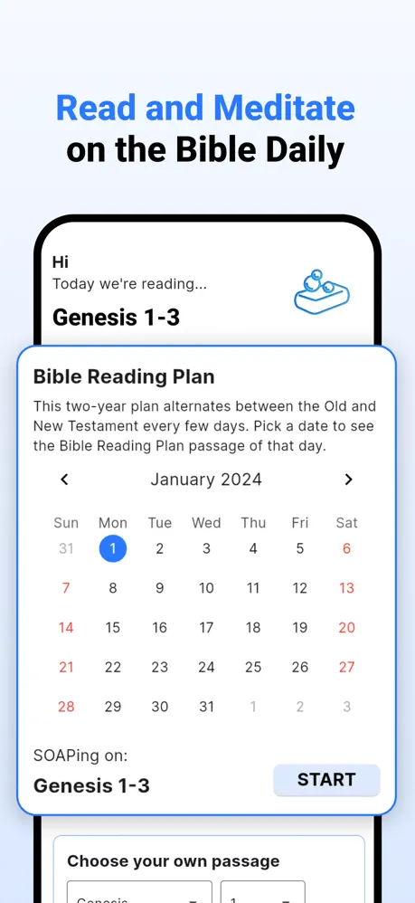
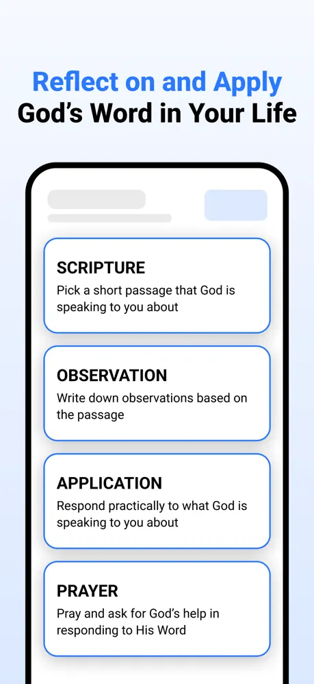
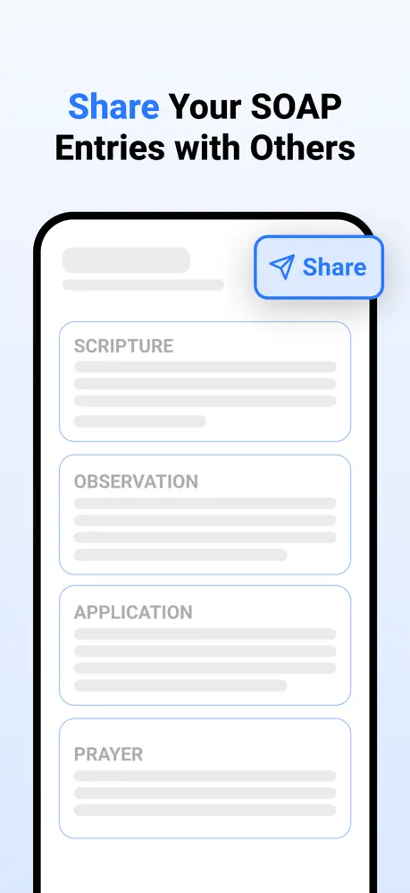
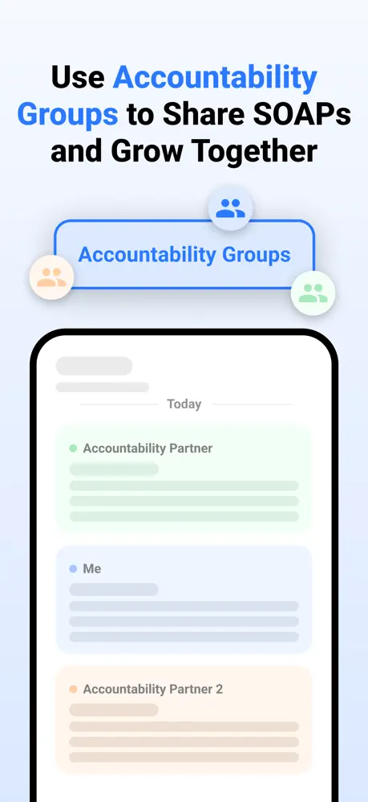

Read the Bible daily.
Reflect on God's Word.
Grow with others.
Read a passage, write what you notice, apply it, and pray. Then share it with friends who keep you going.
Made for your daily time with God
Spend 15 to 30 minutes in God's Word, then carry it with you for the rest of the day.
01 · READ
Read and meditate on the Bible daily
Follow a two-year plan that alternates between the Old and New Testament every few days. Pick any date to see its passage, or choose your own. Read in eight translations, including ESV, NIV and NLT.

02 · REFLECT
Reflect on and apply God's Word in your life
Write a SOAP entry for each reading: the verse that speaks to you, what you notice, how you'll apply it, and a prayer. Your past entries stay with you to revisit and edit.

03 · SHARE
Share your SOAP entries with others
Send a SOAP to a friend or your accountability group in one tap. Encourage each other and stay on track together.

04 · GROW TOGETHER
Grow together with accountability groups
Faith grows best with others. Share your SOAP with the people walking alongside you, and see what God is teaching them too.

What is the SOAP method?
SOAP is a simple way to study the Bible and remember what you read. Instead of just finishing a chapter, you slow down, write four short things, and respond to God.
SCRIPTURE
Read the day's passage. Pick the verse that God is speaking to you about and write it down.
OBSERVATION
Write what you notice. What does it say about God? What caught your attention?
APPLICATION
Make it personal. Respond practically to what God is saying to you today.
PRAYER
Pray and ask for God's help to respond to His Word and live it out.
John 15:5
Jesus says we can do nothing apart from Him. He keeps repeating the word "abide".
Before my first meeting, I'll pause and ask what He wants me to do.
Lord, keep me close to You today.
Get SOAPing today
Free to download. Pick the one that fits your device, or open it in your browser.